DC Motor Speed: Simulink Controller Design
Contents
From the DC Motor Speed: Simulink Modeling page we generated two different DC motor models in Simulink. We will now employ these models within Simulink to simulate the system response and design different approaches to control.
Extracting a linear model into MATLAB
A linear model of the system can be extracted from the Simulink model into the MATLAB workspace. This can accomplished employing the MATLAB command linmod or from directly within Simulink as we will do here. We will specifically use the base Simulink model developed from first principles shown below. You can download this model here, or you can refer to the DC Motor Speed: Simulink Modeling page to recreate the model yourself.

Recall that the physical parameters have to be set if they have not previously been defined in the workspace.
J = 0.01; b = 0.1; K = 0.01; R = 1; L = 0.5;
We then need to identify the inputs and outputs of the model we wish to extract. First right-click on the signal representing the Voltage input in the Simulink model. Then choose Linearization > Input Point from the resulting menu. Similarly, right-click on the signal representing the Speed output and select Linearization > Output Point from the resulting menu. The input and output signals should now be identified on your model by arrow symbols as shown in the figure below.

In order to perform the extraction, select from the menus at the top of the model window Tools > Control Design > Linear Analysis. This will cause the Linear Analysis Tool to open. Within the Linear Analysis Tool window, the Operating Point to be linearized about can remain the default, Model Initial Condition. In order to perform the linearization, next click the Linearize button identified by the green triangle. The result of this linearization is the linsys1 object which now appears in the Linear Analysis Workspace as shown below. Furthermore, the open-loop step response of the linearized system was also generated automatically.

The open-loop step response above is consistent with the response generated in the DC Motor Speed: System Analysis page The reason the responses match so closely is because this Simulink model uses only linear components. Note that this process can be used extract linear approximations of models with nonlinear elements too.
We will further verify the model extraction by looking at the model itself. The linearized model can be exported by simply dragging the object into the MATLAB Workspace. This object can then be used within MATLAB in the same manner as an object created directly from the MATLAB command line. Specifically, entering the command zpk(linsys1) in the MATLAB command window demonstrates that the resulting model has the following form.
(1)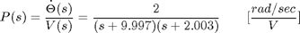
This model matches the one generated in the DC Motor Speed: System Modeling page. This can be seen by repeating the MATLAB commands given below.
s = tf('s');
P_motor = K/((J*s+b)*(L*s+R)+K^2);
zpk(P_motor)
ans =
2
-------------------
(s+9.997) (s+2.003)
Continuous-time zero/pole/gain model.
Open-loop response
The open-loop step response can also be generated directly within Simulink, without extracting any models to the MATLAB workspace. In order to simulate the step response, the details of the simulation must first be set. This can be accomplished by selecting Configuration Parameters from the Simulation menu. Within the resulting menu, define the length for which the simulation is to run in the Stop time field. We will enter "3" since 3 seconds will be long enough for the step response to reach steady state. Within this window you can also specify various aspects of the numerical solver, but we will just use the default values for this example.
Next we need to add an input signal and a means for displaying the output of our simulation. This is done by doing the following:
- Remove the In1 and Out1 blocks.
- Insert a Step block from the Simulink/Sources library and connect it with a line to the Voltage input of the motor subsystem.
- To view the Speed output, insert a Scope from the Simulink/Sinks library and connect it to the Speed output of the motor subsystem.
- To provide a appropriate unit step input at t=0, double-click the Step block and set the Step time to "0".
The final model should appear as shown in the following figure.
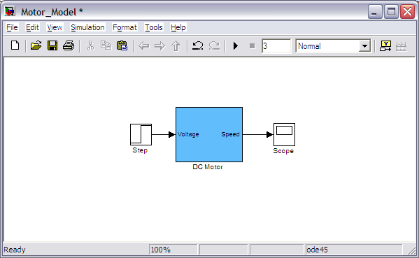
Then run the simulation (press Ctrl-T or select Start from the Simulation menu). When the simulation is finished, double-click on the scope and hit its autoscale button. You should see the following output.
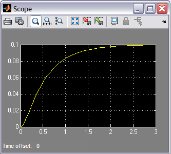
This response is identical to that obtained by MATLAB above using the extracted model. This is again to be expected because this Simulink model includes only linear blocks.
Closed-loop response with lag compensator
In the DC Motor Speed: Root Locus Controller Design page a lag compensator was designed with the following transfer function.
(2)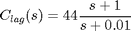
To generate the closed-loop step response with this compensator in Simulink, we will begin with the "Motor_Model.mdl" file described above. We will then put the lag compensator in series with the motor subsystem and will feed back the motor's speed for comparison to a desired reference.
More specifically, follow the steps given below:
- Remove the Input and Output ports of the model.
- Insert a Sum block from the Simulink/Math Operations library. Then double-click on the block and enter "|+-" for its List of signs where the symbol "|" serves as a spacer between ports of the block.
- Insert a Transfer Function block from the Simulink/Continuous library. Then double-click on the block and edit the Numerator coefficients field to "[44 44]" and the Denominator coefficients field to "[1 0.01]".
- Insert a Step block from the Simulink/Sources library. Then double-click on the block and set the Step time to "0".
- Insert a Scope block from the Simulink/Sinks library.
Then connect and label the components as shown in the following figure
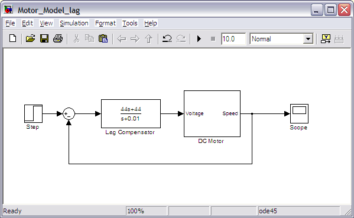
You can download our version of the closed-loop system model here, Motor_Model_lag.mdl.
Then run the simulation (press Ctrl-T or select Start from the Simulation menu). When the simulation is finished, double-click on the scope and hit its autoscale button. You should see the following output.
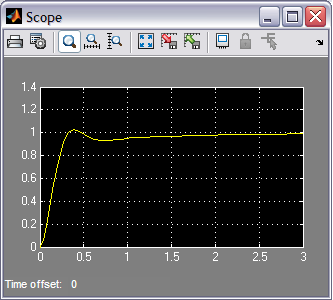
This step response matches exactly the closed-loop performance observed in the DC Motor Speed: Root Locus Controller Design page where the lag compensator was originally designed. Note that while we used the physics-based Simulink model developed in the DC Motor Speed: Simulink Modeling page for simulating the closed-loop system, we could have equivalently used the Simscape version of the DC motor model.
Closed-loop response with lead compensator
We have shown in the above and in other pages of this example that the lag compensator we have designed meets all of the given design requirements. Instead of a lag compensator, we could have also designed a lead compensator to meet the given requirements. More specifically, we could have designed a lead compensator to achieve a similar DC gain and phase margin to that achieved by the lag compensator, but with a larger gain crossover frequency. You can refer back to the DC Motor Speed: Frequency Domain Methods for Controller Design page for more details on the design of the lag compensator, but the fact that the DC gains and phase margins are similar indicate that the responses under lag and lead control would have similar amounts of error in steady state and similar amounts of overshoot. The difference in response would come in that the larger gain crossover frequency provided by the lead compensator would make the system response faster than with the lag compensator. We will specifically use the following lead compensator.
(3)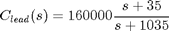
To see the precise effect of the lead compensator as compared to our lag compensator, let's modify our Simulink model from above as follows:
- Disconnect the Step block and Scope block from the rest of the model.
- Copy the blocks forming the closed-loop of the model: the Sum block, the Transfer Function block, and the DC Motor subsystem. Then paste a copy of this loop below the original blocks.
- Double-click on the Transfer Function block and edit the Numerator coefficients field to "[160000 5.6e6]" and the Denominator coefficients field to "[1 1035]".
- Insert a Mux block from the Simulink\Signal Routing library and connect the outputs of the two Motor subsystem blocks to the inputs of the Mux and connect the output of the Mux to the Scope.
- Connect the Step block to the Sum block of the original feedback system. Then branch off from this line and connect it to the Sum block of the lead compensated system as well.
The Mux block serves to bundle the two signals into a single line, this way the Scope will plot both speed signals on the same set of axes. When you are done, your model should appear as follows.
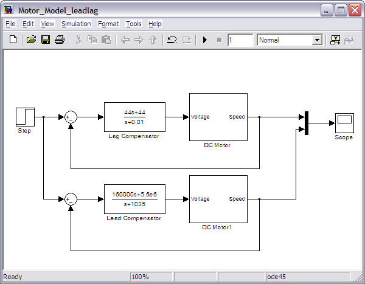
Running the simulation and observing the output produced by the scope, you will see that both responses have a steady-state error that approaches zero. Zooming in on the graphs you can generate a figure like the one shown below. Comparing the two graphs, the purple response belonging to the lead compensated system has a much smaller settle time and slightly larger, but similar, overshoot as compared to the yellow response produced by the lag compensated system.
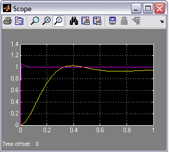
It is generally preferred that a system respond to a command quickly. Why then might we prefer to use the lag compensator even though it is slower than the lead compensator? The advantage of the lag compensator in this case is that by responding more slowly it requires less control effort than the lead compensator. Less control effort means that less power is consumed and that the various components can be sized smaller since they do not have to supply as much energy or withstand the higher voltages and current required of the lead compensator.
We will now modify our simulation to explicitly observe the control effort requirements of our two feedback systems. We will do this by sending our various signals to the workspace for plotting and further manipulation if desired. Specifically, delete the Scope and Mux blocks from your Simulink model. Then insert four To Workspace blocks from the Simulink\Sinks library. Double-click on each of the blocks and change their Save format from Structure to Array. Also provide a Variable name within each block that will make sense to you. You can then connect the blocks to the existing model and label them as shown below. You can download our version of this Simulink model here, Motor_Model_leadlag.mdl.
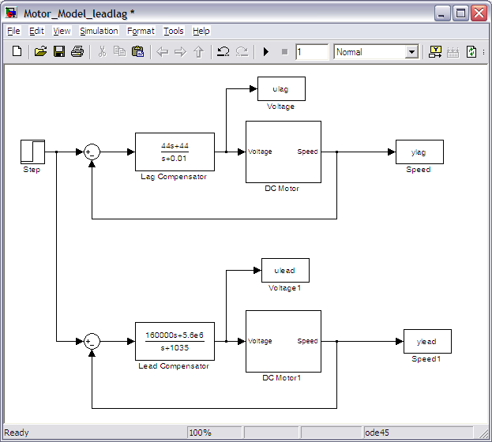
Then change the simulation stop time to 1 second and run the model. The act of running the simulation will send to the MATLAB workspace a series of arrays corresponding to the variables set-up in your model with the To Workspace blocks. Furthermore, the time vector used by that run of the simulation is stored in the default variable tout. You can now plot the results of your simulation from the workspace. Enter the following code to see how to specifically plot the control effort variables.
subplot(2,1,1)
plot(tout,ulag);
xlabel('time (seconds)')
ylabel('control effort (volts)')
title('Control Effort Under Lag Compensation')
subplot(2,1,2)
plot(tout,ulead);
xlabel('time (seconds)')
ylabel('control effort (volts)')
title('Control Effort Under Lead Compensation')
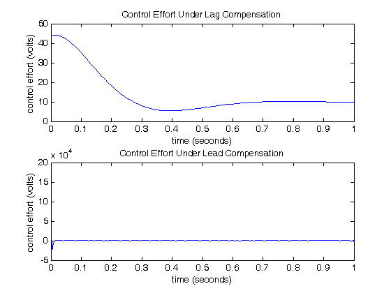
Examination of the above shows that the control effort required by the lead compensator is above 150,000 Volts, which is well above anything that could be supplied or withstood by a typical DC motor. This exemplifies the tradeoff inherent between achieving small tracking error and keeping the amount of control effort required small. Optimal control techniques have been developed to achieve an optimal balance between competing goals. One such technique is explored in the Aircraft Pitch: State Space Methods for Controller Design page.